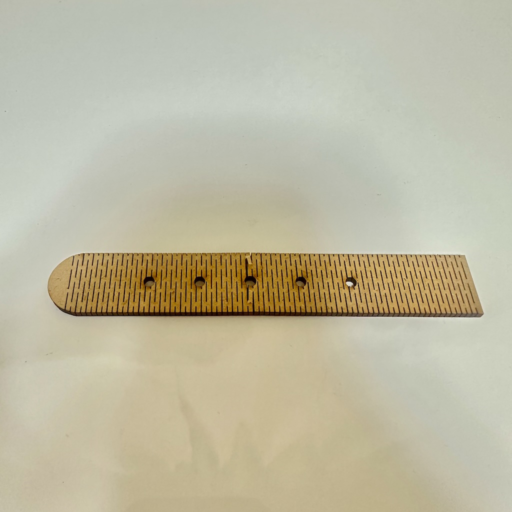
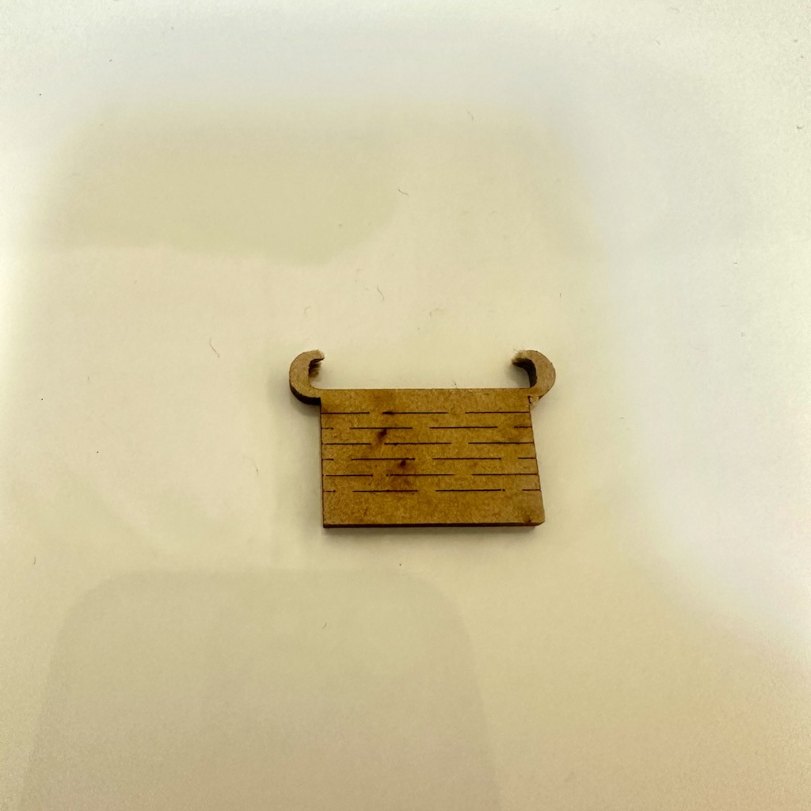
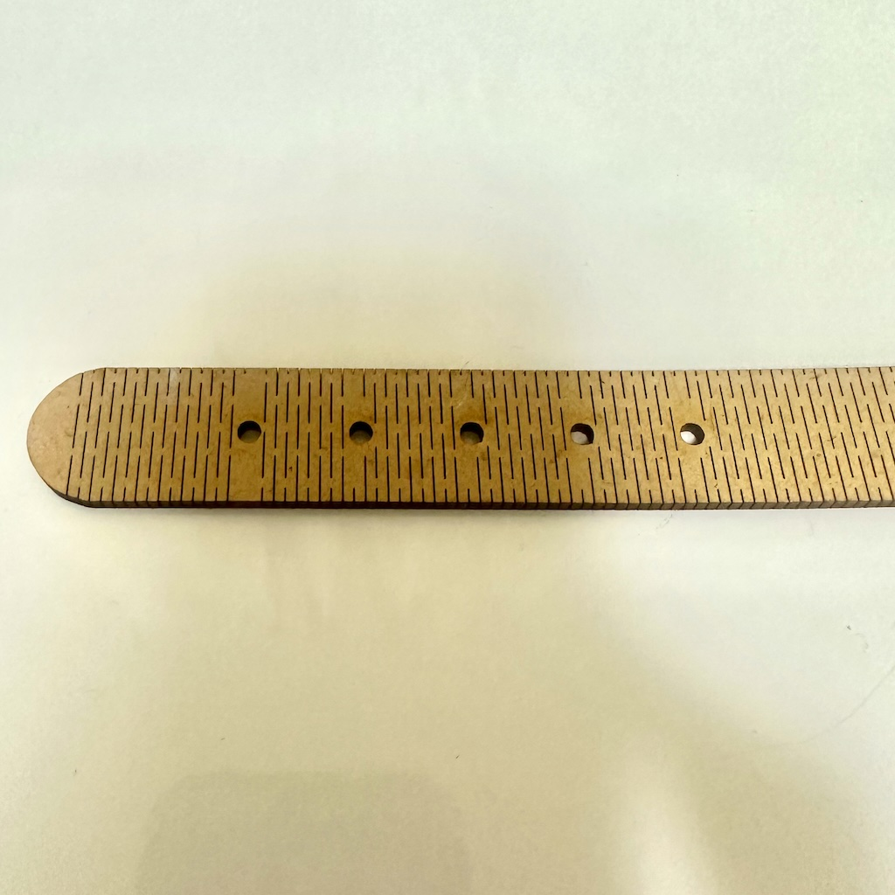
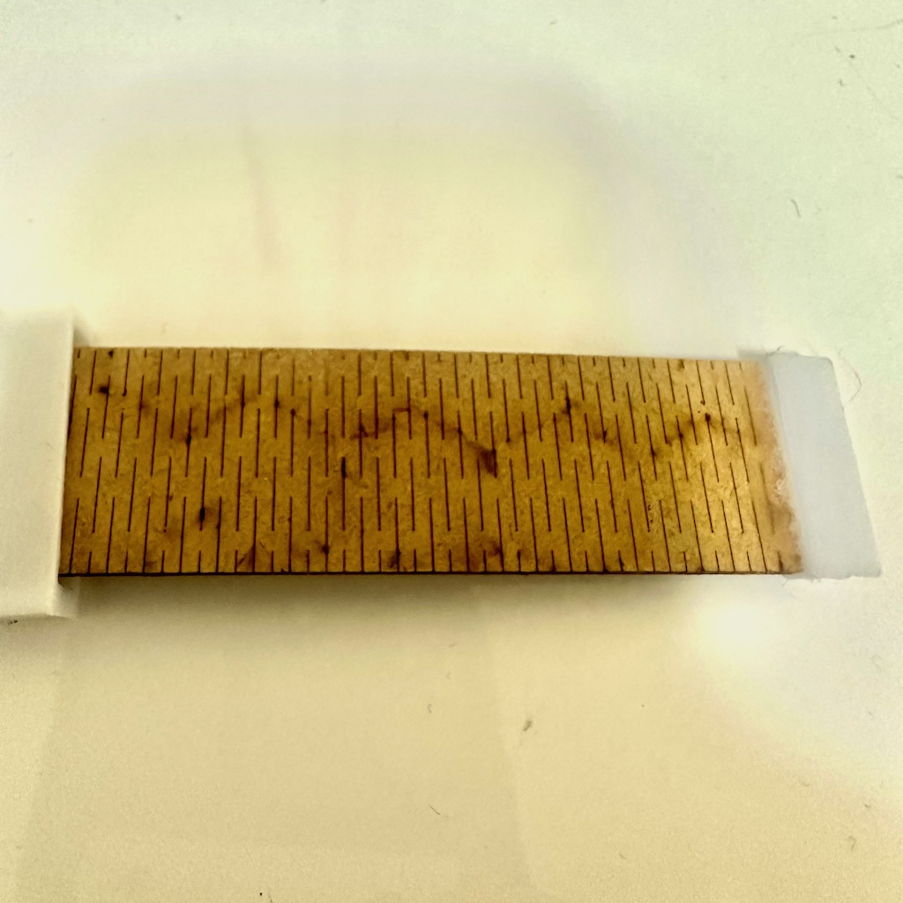
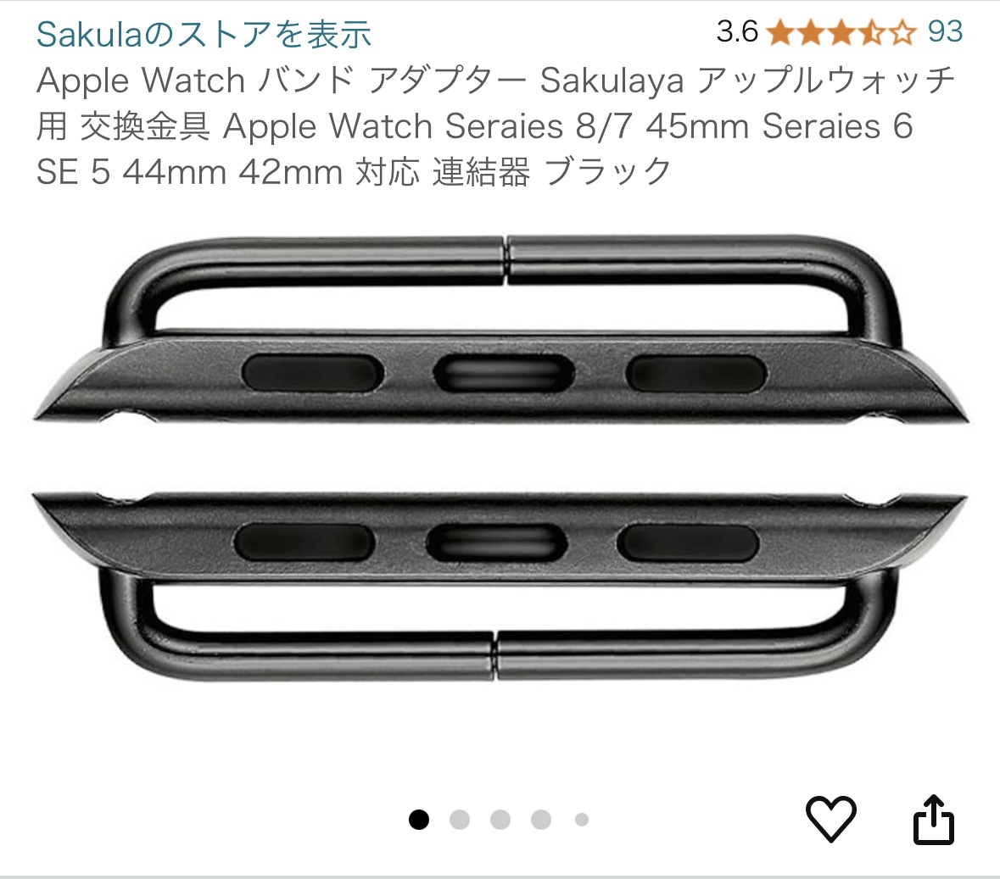
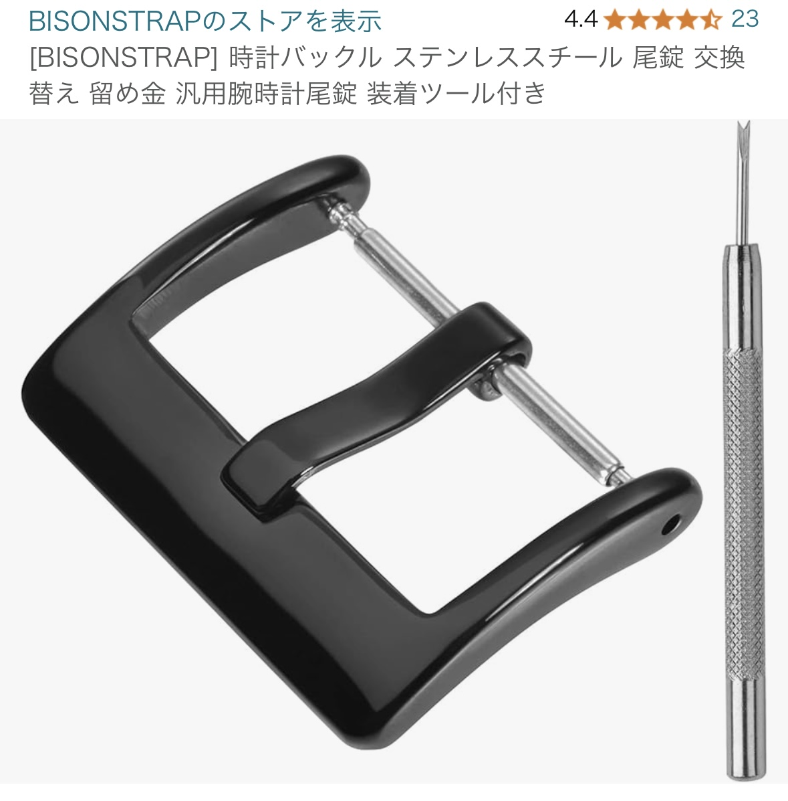
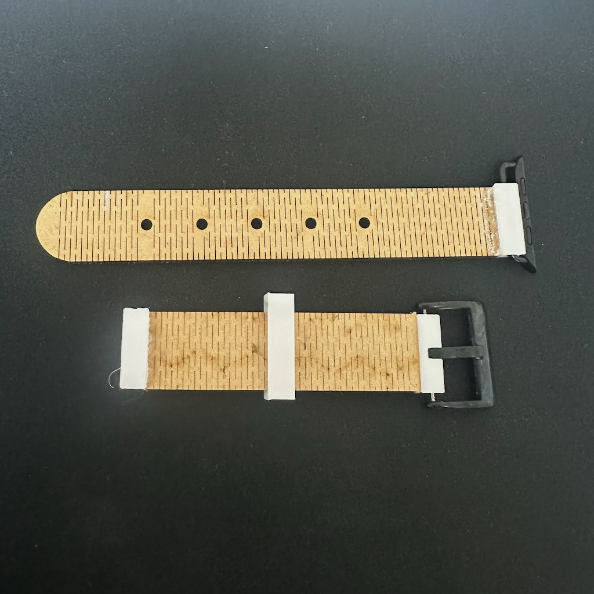
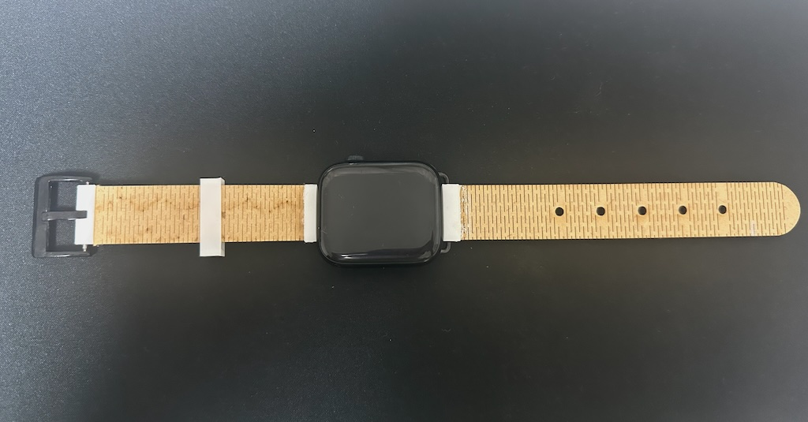
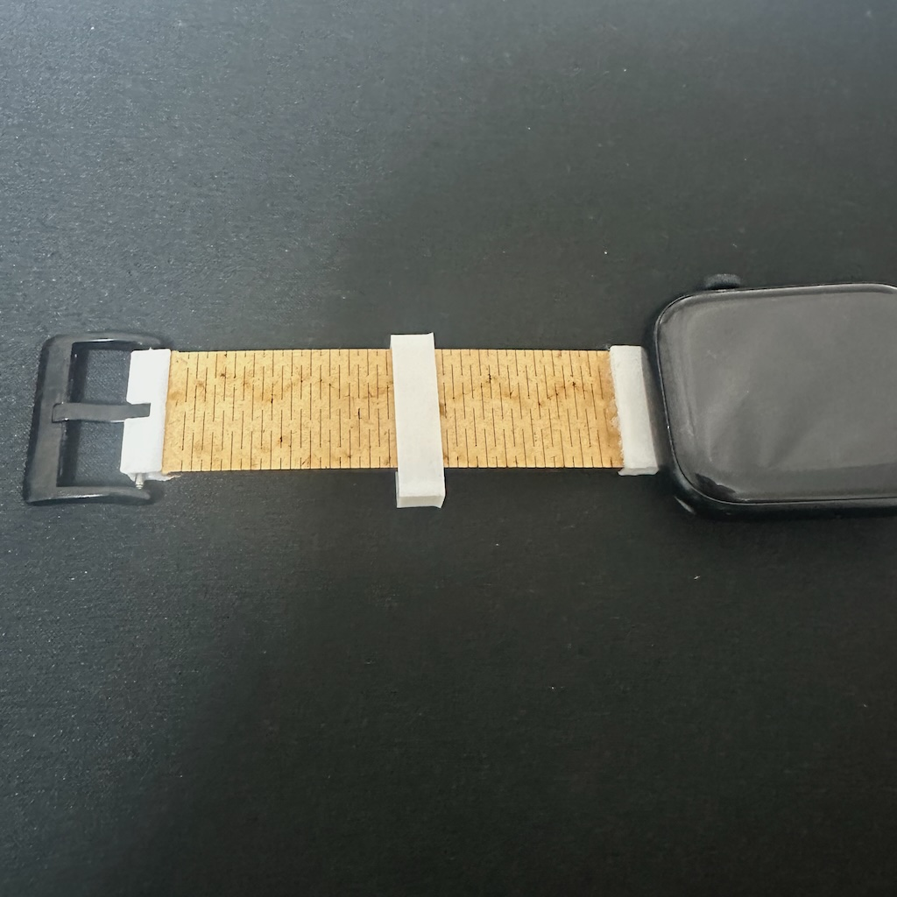
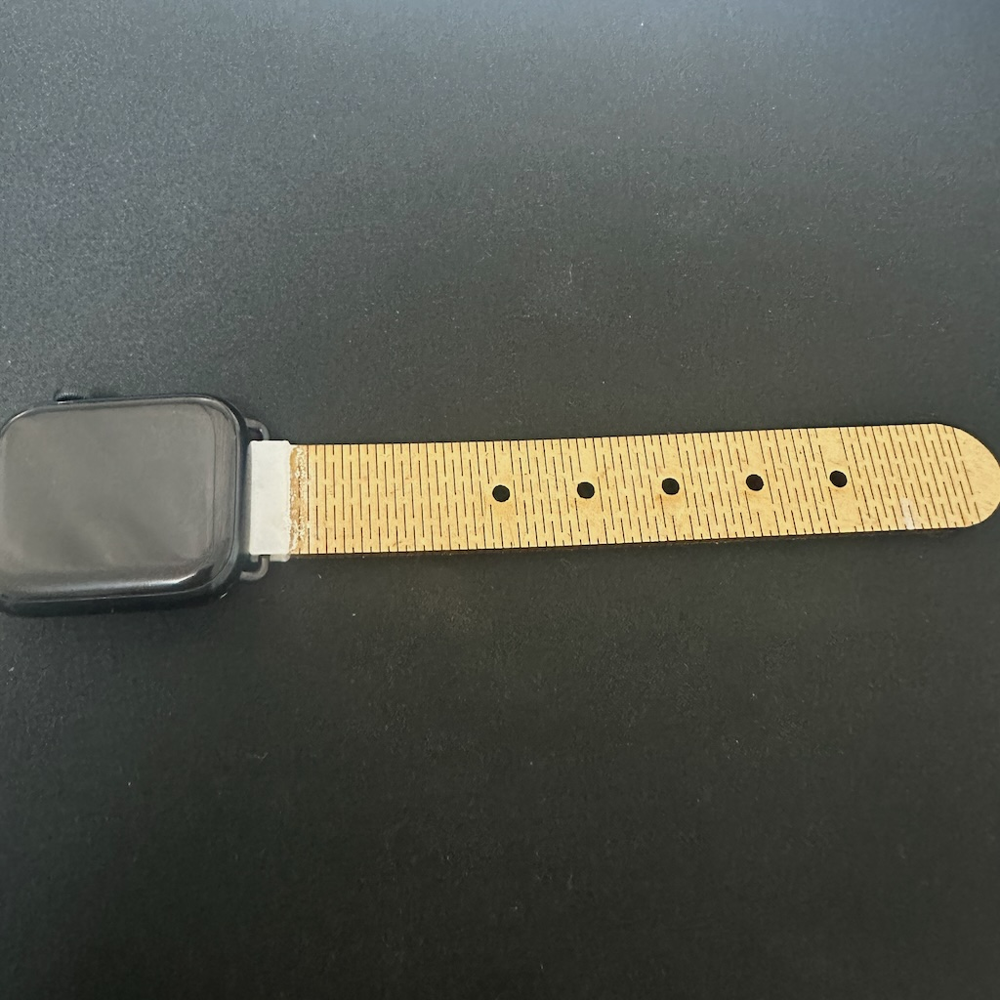

Computer-controlled Cutting
Assignment No.2 Computer-controlled Cutting
はじめの一歩
Computer-controlled Cuttingとはなんぞやという感じで始まった今回の課題。正直自由すぎて前回の3DPrintingよりも難しかった。
何を作ろうかなとやまくんと考えていたら彼が珍しく良いことを言った。
「Apple Watchのバンド作れば？」
それ良いやんてことで本気を出して頑張って作ることにした。
Fusionと曲げ加工
早速Fusionを起動してスケッチを始めたのだが、ある問題が発生した。
腕に巻くということは、曲げ加工をしなければならない。
しかしYouTubeなどで調べても設定などが複雑なものばかりだった。
さあ困ったと思っていたのだが一つ希望の見えた。
曲げ加工用のPDFデータがネットに公開されていた。
「これをキャンバスに設定してなぞる感じでスケッチしていけばできるのでは」というわずかな希望を信じてやってみた。
実際のスケッチが以下の画像である。


（気が狂いそうなくらいめんどくさかった）
いざレーザーカット/試行錯誤
1番の山場と言っても良いであろうスケッチを乗り越えて無敵になった。
早速ファブラボに行きレーザーカッターで出力してみた。その結果が以下の画像である。
 
左側・・・形はすごく綺麗だったが、何回かグネグネしているうちに穴のところから裂けてしまった。
右側・・・左同様形は綺麗だったが、バンドの留め具の部分が切れてしまった。
とりあえずMDF素材の強度を確認できたからヨシとする。
さあここから調整していく。
まず、左側のパーツは穴の近くから裂けてしまった。これを回避するために、Illustratorで穴の近くにはカットの線を入れないようにした。
そして右側。こっちは切れてしまったが、幸い綺麗な形のまま切れたので切れ端をそのまま使うことにした。
以下の画像が調整後のものである。
 
左側・・・完璧。しっかり曲がる上に強度も増した。
右側・・・切れ端には見えないくらい良い感じ。謎のパーツがついているが、それについては後で。
とりあえずバンド部分は完成。だが今回は本気を出しているので、ここでは終わらない。
Apple Watchと連結
バンドの部分が出来上がって浮かれている場合ではないのだ。問題はこのバンドとApple Watchをどう連結するのかである。
とりあえず何か使えそうなものがないかAmazonを漁っていたらこんなものを見つけた。
 
この商品たちをみた時ビビッときた。これと3Dプリンターを使えばいけるぞ。
そんな感じで今度は3Dプリンターで連結に足りない部分を作ることにした。
そして出来上がったのが以下の画像のものである。

手作り感がすごいが、一気に時計のバンド感が出た。
Fusionで見るとこんな感じ


そして最終的に出来上がったのがこれである。

 
完璧すぎて笑ってしまった。少し不格好だが腕に巻くこともできる。
そんな感じで浮かれていたら思いもよらぬところでトラブルが起きた。
Amazonで買った連結部のネジ山が潰れてしまった。
ひとまず期限内に形になって良かったが、完全体となるのはお預けとなってしまった。。。
おわりに